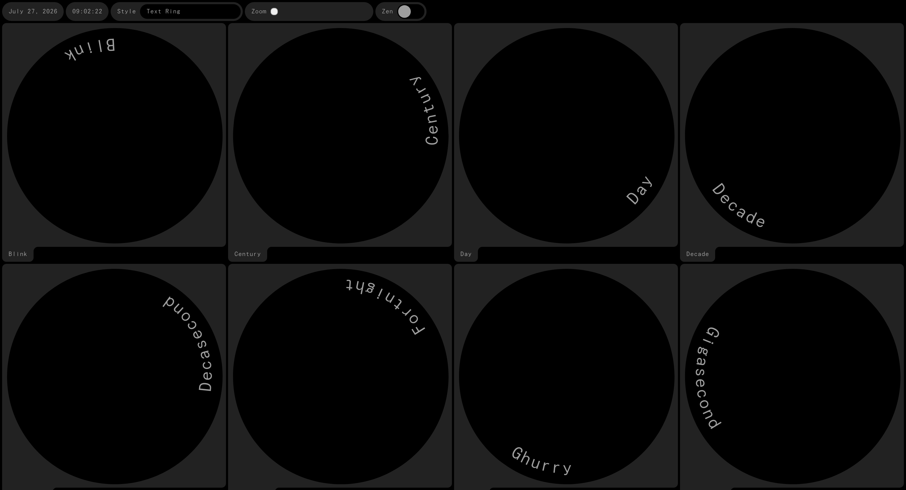
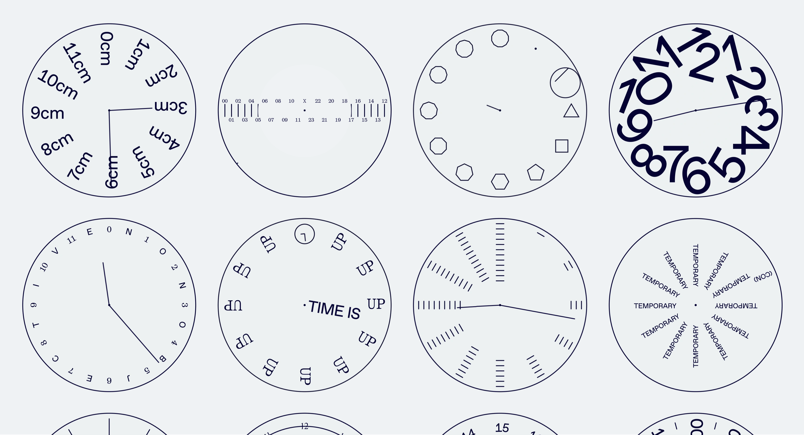
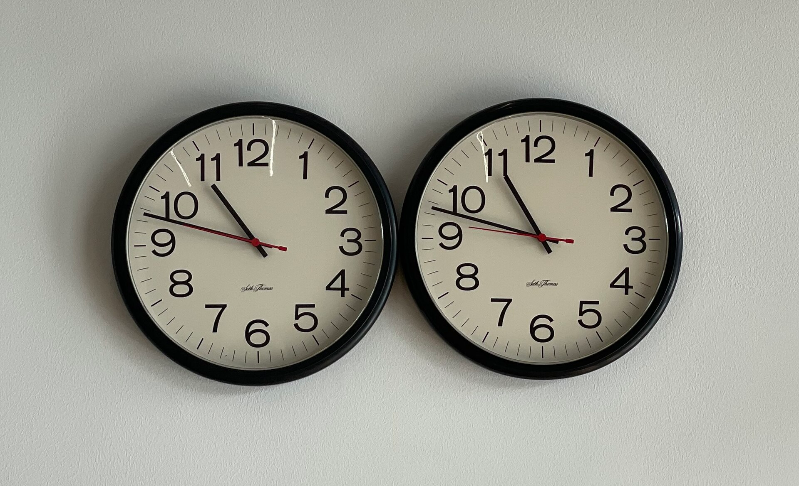
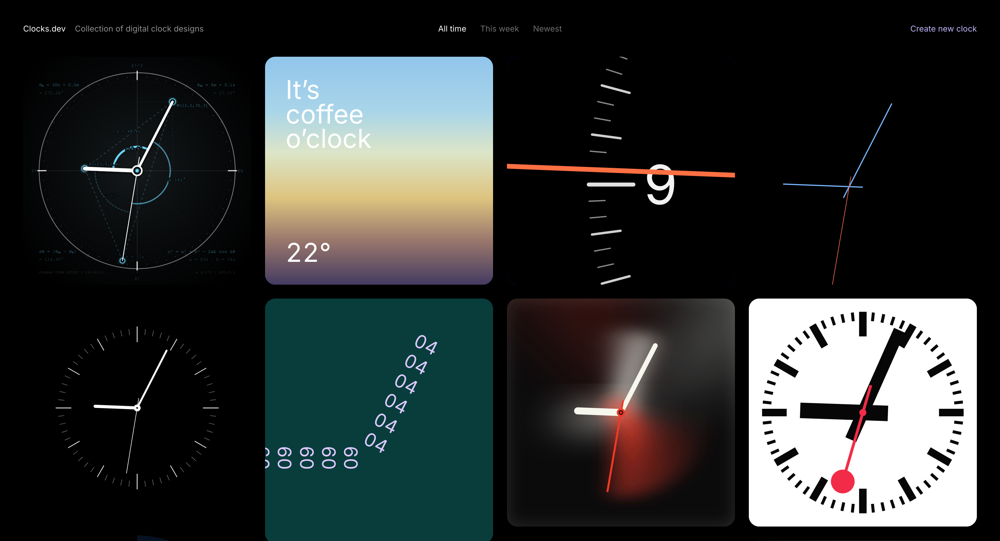

<!DOCTYPE html>
<html lang="en">
<head>
    <meta charset="utf-8" />
    <meta name="viewport" content="width=device-width, initial-scale=1.0, maximum-scale=1.0, user-scalable=no" />

    <title></title>
    <link rel="stylesheet" href="dist/reset.css">
    <link rel="stylesheet" href="dist/reveal.css" />
    <link rel="stylesheet" href="css/slides-extended.css" />
    <link rel="stylesheet" href="assets/reveal-theme.css" id="theme" />
    <link rel="stylesheet" href="plugin/highlight/monokai.css" />
    <link rel="stylesheet" href="plugin/customcontrols/style.css">


    <script defer src="dist/fontawesome/all.min.js"></script>
    <script defer src="plugin/load-mathjax.js"></script>

    <script type="text/javascript">
        function pageInIframe() {
            return (window.location !== window.parent.location);
        }

        let forgetPop = true;
        function onPopState(event) {
            if(forgetPop){
                forgetPop = false;
            } else if( pageInIframe()) {
                parent.postMessage(event.target.location.href, "app://obsidian.md");
            }
        }
        window.onpopstate = onPopState;
        window.onmessage = event => {
            if(event.data == "reload"){
                window.document.location.reload();
            }
            forgetPop = true;
        }

        function fitElements() {
            const itemsToFit = document.getElementsByClassName('fitText');
            for (const item in itemsToFit) {
                if (Object.hasOwnProperty.call(itemsToFit, item)) {
                    const element = itemsToFit[item];
                    fitElement(element, 1, 1000);
                    element.classList.remove('fitText');
                }
            }
        }

        function fitElement(element, start, end) {

            let size = (end + start) / 2;
            element.style.fontSize = `${size}px`;

            if (Math.abs(start - end) < 1) {
                while (element.scrollHeight > element.offsetHeight) {
                    size--;
                    element.style.fontSize = `${size}px`;
                }
                return;
            }

            if (element.scrollHeight > element.offsetHeight) {
                fitElement(element, start, size);
            } else {
                fitElement(element, size, end);
            }
        }

        document.onreadystatechange = () => {
            fitElements();
            if (document.readyState === 'complete') {
                if (pageInIframe() && window.location.href.indexOf("?export") != -1){
                    parent.postMessage(event.target.location.href, "app://obsidian.md");
                }
                if (window.location.href.indexOf("print-pdf") != -1){
                    let stateCheck = setInterval(() => {
                        clearInterval(stateCheck);
                        window.print();
                    }, 250);
                }
            }
        };
    </script>
</head>

<body>
    <div class="reveal">
        <div class="slides"><section  data-markdown><script type="text/template"><!-- .slide: class="drop" template="" -->
<div class="" style="position: absolute; left: 0px; top: 0px; height: 700px; width: 960px; min-height: 700px; display: flex; flex-direction: column; align-items: center; justify-content: center" absolute="true">

# Ask Better, Make a Clock

#### _WEB2026 - Day 6_
</div></script></section><section  data-markdown><script type="text/template"><!-- .slide: class="drop" template="" -->
<div class="" style="position: absolute; left: 0px; top: 0px; height: 700px; width: 960px; min-height: 700px; display: flex; flex-direction: column; align-items: center; justify-content: center" absolute="true">

## You are no longer people who have never coded!
</div></script></section><section  data-markdown><script type="text/template"><!-- .slide: class="drop" template="" -->
<div class="" style="position: absolute; left: 0px; top: 0px; height: 700px; width: 960px; min-height: 700px; display: flex; flex-direction: column; align-items: center; justify-content: center" absolute="true">

## From zero to 3,737 lines


**1,521** CSS declarations

**309** selectors

**81** images

**6** sites that exist now and did not exist last Monday! (we're looking for that one more)
</div></script></section><section  data-markdown><script type="text/template"><!-- .slide: class="drop" template="" -->
<div class="" style="position: absolute; left: 0px; top: 0px; height: 700px; width: 960px; min-height: 700px; display: flex; flex-direction: column; align-items: center; justify-content: center" absolute="true">

## Doing it in style...

1. `width` .......... 105

2. `text-align` ...... 86

3. `font-size` ....... 85

4. `display` ......... 68

5. `margin` .......... 66

6. `transform`.........60
</div></script></section><section  data-markdown><script type="text/template"><!-- .slide: class="drop" template="" -->
<div class="" style="position: absolute; left: 0px; top: 0px; height: 700px; width: 960px; min-height: 700px; display: flex; flex-direction: column; align-items: center; justify-content: center" absolute="true">

## Honorable mentions

- **Tallest page:** Prakhar at 36,320 pixels. 45 phone screens long!
- **Biggest CSS vocabulary**: Rushikesh with 60 properties.
- **Most cats on one front page:** Anchita, 13
</div></script></section><section  data-markdown><script type="text/template"><!-- .slide: class="drop" template="" -->
<div class="" style="position: absolute; left: 0px; top: 0px; height: 700px; width: 960px; min-height: 700px; display: flex; flex-direction: column; align-items: center; justify-content: center" absolute="true">

## Messages from the weekend
</div></script></section><section  data-markdown><script type="text/template"><!-- .slide: class="drop" template="" -->
<div class="" style="position: absolute; left: 0px; top: 0px; height: 700px; width: 960px; min-height: 700px; display: flex; flex-direction: column; align-items: center; justify-content: center" absolute="true">

> I can see the image of the border in css but not in the live server

> "the css looks different, why??"

> (photo of screen or code)
</div>

<aside class="notes"><p>Politeness isnt a problem here but the only thing I can respond to with are more questions.</p>
</aside></script></section><section  data-markdown><script type="text/template"><!-- .slide: class="drop" template="" -->
<div class="" style="position: absolute; left: 0px; top: 0px; height: 700px; width: 960px; min-height: 700px; display: flex; flex-direction: column; align-items: center; justify-content: center" absolute="true">

As your work gets more complex, your progress depends less on what you know and more on **how well you ask**: yourself, an error message, a classmate, an LLM, and only then me.
</div>

<aside class="notes"><p>My job today is to become less necessary for the small stuff, so that my help goes where it matters.</p>
</aside></script></section><section  data-markdown><script type="text/template"><!-- .slide: class="drop" template="" -->
<div class="" style="position: absolute; left: 0px; top: 0px; height: 700px; width: 960px; min-height: 700px; display: flex; flex-direction: column; align-items: center; justify-content: center" absolute="true">

# Part one: asking
</div></script></section><section  data-markdown><script type="text/template"><!-- .slide: class="drop" template="" -->
<div class="" style="position: absolute; left: 0px; top: 0px; height: 700px; width: 960px; min-height: 700px; display: flex; flex-direction: column; align-items: center; justify-content: center" absolute="true">

## Protocol

1. **Read the error.** If VS Code or your terminal is telling you something, read it.
2. **Say it out loud** "I changed ___, I expected ___, I got ___." 
3. **Check the boring stuff:** Is the file saved? Are you editing the file you think you are? Is the server running?
4. **An LLM**: Paste in 1 + 2 + your code, go to the LLM doctor.
5. **Me!** bringing what you tried, the exact error, what the LLM said.
</div></script></section><section  data-markdown><script type="text/template"><!-- .slide: class="drop" template="" -->
<div class="" style="position: absolute; left: 0px; top: 0px; height: 700px; width: 960px; min-height: 700px; display: flex; flex-direction: column; align-items: center; justify-content: center" absolute="true">

## Asking a question

> Bad: "my page is broken, fix this"

> Better: "I'm creating a project in plain HTML and CSS, no Javascript. I moved my CSS into a `<style>` tag in `index.astro`. I expected the fonts to change but the page went blank instead. Here is the terminal error: (pasted). What is wrong, and which line should I look at?"
</div></script></section><section  data-markdown><script type="text/template"><!-- .slide: class="drop" template="" -->
<div class="" style="position: absolute; left: 0px; top: 0px; height: 700px; width: 960px; min-height: 700px; display: flex; flex-direction: column; align-items: center; justify-content: center" absolute="true">

## How to share code

1. **Code is shared as text, never as a photo.** 
2. **Errors are to be shared verbatim.** Copy the whole message.
3. **Anything bigger than a snippet is shared as a link.** Push your project to GitHub and send the repository link. Whoever helps you sees exactly what you see.
</div></script></section><section  data-markdown><script type="text/template"><!-- .slide: class="drop" template="" -->
<div class="" style="position: absolute; left: 0px; top: 0px; height: 700px; width: 960px; min-height: 700px; display: flex; flex-direction: column; align-items: center; justify-content: center" absolute="true">

# Part two: the tools
</div></script></section><section  data-markdown><script type="text/template"><!-- .slide: class="drop" template="" -->
<div class="" style="position: absolute; left: 0px; top: 0px; height: 700px; width: 960px; min-height: 700px; display: flex; flex-direction: column; align-items: center; justify-content: center" absolute="true">

## Finder and the terminal

The terminal shows the same folders and files as Finder or Explorer. You control it by typing instead of clicking.

|In Finder|In the terminal|
|---|---|
|Double-click a folder|`cd foldername`|
|Look inside a folder|`ls`|
|"Which folder am I in?"|`pwd`|
</div></script></section><section  data-markdown><script type="text/template"><!-- .slide: class="drop" template="" -->
<div class="" style="position: absolute; left: 0px; top: 0px; height: 700px; width: 960px; min-height: 700px; display: flex; flex-direction: column; align-items: center; justify-content: center" absolute="true">

## Try it

Open a terminal. Mac: press `Cmd+Space` and type "terminal". Windows: open Git Bash.

```bash
pwd
ls
cd Desktop
ls
```

Navigate to the folder where last week's letter project lives, using only `cd`, `ls` and `pwd`. When you are there, run `ls` and check that you can see your own files.
</div>

<aside class="notes"><p>Finding their own project is the whole exercise: real files, real navigation. Common snags: Windows students in cmd instead of Git Bash, and folder names with spaces, which need quotes. When most of the room has arrived, move on; nobody needs to be a terminal expert today.</p>
</aside></script></section><section  data-markdown><script type="text/template"><!-- .slide: class="drop" template="" -->
<div class="" style="position: absolute; left: 0px; top: 0px; height: 700px; width: 960px; min-height: 700px; display: flex; flex-direction: column; align-items: center; justify-content: center" absolute="true">

## Why a framework?

Plain HTML has no way to write something once and reuse it everywhere!

If one page is 1000 lines long, how would 50 page websites look?
</div></script></section><section  data-markdown><script type="text/template"><!-- .slide: class="drop" template="" -->
<div class="" style="position: absolute; left: 0px; top: 0px; height: 700px; width: 960px; min-height: 700px; display: flex; flex-direction: column; align-items: center; justify-content: center" absolute="true">

## Installation Break

- Install [Git](https://git-scm.com/install/)
- Install [Node.js](https://nodejs.org/en/download)
</div></script></section><section  data-markdown><script type="text/template"><!-- .slide: class="drop" template="" -->
<div class="" style="position: absolute; left: 0px; top: 0px; height: 700px; width: 960px; min-height: 700px; display: flex; flex-direction: column; align-items: center; justify-content: center" absolute="true">

## Hello, Astro

Astro takes pages where shared parts are written once, and generates the finished site with every page filled in.

The output is the same kind of files you wrote by hand last week. **An `.astro` page is an HTML file that is allowed some extras.**

<br></br>

<style> .flow { display: flex; align-items: stretch; justify-content: center; gap: 0.6em; font-family: var(--font-archivo); } .flow p { margin: 0; } .flow .box { border: 1px solid var(--color-neutral); border-radius: 6px; padding: 0.6em 0.9em; font-size: 0.48em; text-align: left; line-height: 1.4; display: flex; flex-direction: column; justify-content: center; } .flow .box .t { font-weight: 700; } .flow .box .s { font-weight: 300; } .flow .arrow { font-size: 0.8em; align-self: center; } .flow .astro-box { border: 2px solid var(--color-orange); } .route-list { font-family: var(--font-archivo); font-size: 0.55em; text-align: left; display: flex; flex-direction: column; gap: 0.5em; margin-top: 0.6em; } .route-list p { margin: 0; } .route-row { display: grid; grid-template-columns: 1fr auto 1fr; gap: 0.8em; align-items: center; } .route-row code { background: rgba(128,128,128,0.15); padding: 0.15em 0.45em; border-radius: 4px; } .route-row .to { color: var(--color-orange); } </style> <div class="flow"> <div class="box"><span class="t">Your pages</span><span class="s">HTML and CSS with components, content, files</span></div> <div class="arrow">→</div> <div class="box astro-box"><span class="t">Astro</span><span class="s">processes every copy</span></div> <div class="arrow">→</div> <div class="box"><span class="t">A finished site</span><span class="s">plain HTML and CSS files</span></div> </div> <br></br>
</div></script></section><section  data-markdown><script type="text/template"><!-- .slide: class="drop" template="" -->
<div class="" style="position: absolute; left: 0px; top: 0px; height: 700px; width: 960px; min-height: 700px; display: flex; flex-direction: column; align-items: center; justify-content: center" absolute="true">

## Setup sprint

1. Go to a new empty folder. Open it in VS Code. 
2. Open the terminal, type in `pnpm create astro@latest`
3. Give your project a name, choose the "minimal" template when asked.
4. Then `cd` into that folder and run `pnpm run dev`, open the address it prints
5. Open `src/pages/index.astro`, change the title, save. What happens?
</div></script></section><section  data-markdown><script type="text/template"><!-- .slide: class="drop" template="" -->
<div class="" style="position: absolute; left: 0px; top: 0px; height: 700px; width: 960px; min-height: 700px; display: flex; flex-direction: column; align-items: center; justify-content: center" absolute="true">

## File = URL

Suppose I have a website called `laxmichitfund.com`

<div class="route-list"> <div class="route-row"><code>src/pages/index.astro</code> <span class="to">→</span> <span class="fragment">laxmichitfund.com/</span></div> <div class="route-row"><code>src/pages/about.astro</code> <span class="to">→</span> <span class="fragment">laxmichitfund.com/about</span></div> <div class="route-row"><code>src/pages/About.astro</code> <span class="to">→</span> <span class="fragment">laxmichitfund.com/About</span></div> </div> <div class="fragment">

</div>
</div>

<aside class="notes"><p>Quick, whole room answering together. The capitalisation row tees up the first sabotage. Lowercase, hyphens, no spaces — the Day 4 rules, now enforced by a server.</p>
</aside></script></section><section  data-markdown><script type="text/template"><!-- .slide: class="drop" template="" -->
<div class="" style="position: absolute; left: 0px; top: 0px; height: 700px; width: 960px; min-height: 700px; display: flex; flex-direction: column; align-items: center; justify-content: center" absolute="true">

## Working with an LLM

1. **Set the context** "An Astro project. Plain HTML and CSS.... "
2. **One change per ask.** Small prompts produce changes you can check.
3. **Read before saving.** HTML and CSS: you can read every line so do it! Javascript, maybe not.
4. **Make it teach you.** "Explain what this block does, line by line, in plain words"
5. **Commit every time it works.** If the AI wrecks something, GitHub Desktop's takes you back to your checkpoint
6. When it breaks: paste the **full error**
</div></script></section><section  data-markdown><script type="text/template"><!-- .slide: class="drop" template="" -->
<div class="" style="position: absolute; left: 0px; top: 0px; height: 700px; width: 960px; min-height: 700px; display: flex; flex-direction: column; align-items: center; justify-content: center" absolute="true">

# Part three: make a clock
</div></script></section><section  data-markdown><script type="text/template"><!-- .slide: class="drop" template="" -->
<div class="" style="position: absolute; left: 0px; top: 0px; height: 700px; width: 960px; min-height: 700px; display: flex; flex-direction: column; align-items: center; justify-content: center" absolute="true">




[https://kala.watch/](https://kala.watch/)
</div></script></section><section  data-markdown><script type="text/template"><!-- .slide: class="drop" template="" -->
<div class="" style="position: absolute; left: 0px; top: 0px; height: 700px; width: 960px; min-height: 700px; display: flex; flex-direction: column; align-items: center; justify-content: center" absolute="true">




[https://time.non-objective.works/](https://time.non-objective.works/)
</div></script></section><section  data-markdown><script type="text/template"><!-- .slide: class="drop" template="" -->
<div class="" style="position: absolute; left: 0px; top: 0px; height: 700px; width: 960px; min-height: 700px; display: flex; flex-direction: column; align-items: center; justify-content: center" absolute="true">




[Perfect Lovers](https://en.wikipedia.org/wiki/%22Untitled%22_(Perfect_Lovers))
</div></script></section><section  data-markdown><script type="text/template"><!-- .slide: class="drop" template="" -->
<div class="" style="position: absolute; left: 0px; top: 0px; height: 700px; width: 960px; min-height: 700px; display: flex; flex-direction: column; align-items: center; justify-content: center" absolute="true">




[clocks.dev](https://clocks.dev)
</div></script></section><section  data-markdown><script type="text/template"><!-- .slide: class="drop" template="" -->
<div class="" style="position: absolute; left: 0px; top: 0px; height: 700px; width: 960px; min-height: 700px; display: flex; flex-direction: column; align-items: center; justify-content: center" absolute="true">

## The brief


**Make a clock.** "Clock" is anything that measures time. It should be interesting _to you_! it does not need to be complicated!

Sketch it, design it and use Github Copilot or some other LLM to bring it to life within Astro.
</div></script></section><section  data-markdown><script type="text/template"><!-- .slide: class="drop" template="" -->
<div class="" style="position: absolute; left: 0px; top: 0px; height: 700px; width: 960px; min-height: 700px; display: flex; flex-direction: column; align-items: center; justify-content: center" absolute="true">

## For the code you cannot read

- Your HTML and CSS remain **your** strength. I expect you to understand that part well.
- The JavaScript is a **mechanism**. You must specify exactly what it must do, and test that it does it.
- So your job shifts from reading and writing lines to **directing and verifying behaviour**.
- Be curious! Ask for explanations.
</div></script></section><section  data-markdown><script type="text/template"><!-- .slide: class="drop" template="" -->
<div class="" style="position: absolute; left: 0px; top: 0px; height: 700px; width: 960px; min-height: 700px; display: flex; flex-direction: column; align-items: center; justify-content: center" absolute="true">

This is how everyone, professionals included, works with material they have not mastered yet. The skill is staying the designer and someone with  with the intent, the taste, and the tests.
</div></script></section></div>
    </div>

    <script src="dist/reveal.js"></script>
    <script src="plugin/notes/notes.js"></script>
    <script src="plugin/markdown/markdown.js"></script>
    <script src="plugin/highlight/highlight.js"></script>

    <script src="plugin/zoom/zoom.js"></script>
    <script src="plugin/math/math.js"></script>
    <script src="plugin/mermaid/mermaid.js"></script>
    <script src="plugin/chart/chart.umd.js"></script>
    <script src="plugin/chart/plugin.js"></script>
    <script src="plugin/customcontrols/plugin.js"></script>

    <script>
        function extend() {
            const target = {};
            for (let i = 0; i < arguments.length; i++) {
                const source = arguments[i];
                for (const key in source) {
                    if (source.hasOwnProperty(key)) {
                        target[key] = source[key];
                    }
                }
            }
            return target;
        }

        function isLight(color) {
            let hex = color.replace('#', '');

            // convert #fff => #ffffff
            if (hex.length == 3) {
                hex = `${hex[0]}${hex[0]}${hex[1]}${hex[1]}${hex[2]}${hex[2]}`;
            }

            const c_r = parseInt(hex.substr(0, 2), 16);
            const c_g = parseInt(hex.substr(2, 2), 16);
            const c_b = parseInt(hex.substr(4, 2), 16);
            const brightness = ((c_r * 299) + (c_g * 587) + (c_b * 114)) / 1000;
            return brightness > 155;
        }

        const bgColor = getComputedStyle(document.documentElement).getPropertyValue('--r-background-color').trim();

        if (isLight(bgColor)) {
            document.body.classList.add('has-light-background');
        } else {
            document.body.classList.add('has-dark-background');
        }

        // default options to init reveal.js
        const defaultOptions = {
            controls: true,
            progress: true,
            history: true,
            center: true,
            transition: 'default', // none/fade/slide/convex/concave/zoom
            plugins: [
                RevealMarkdown,
                RevealHighlight,
                RevealZoom,
                RevealNotes,
                RevealMath.MathJax3,
                RevealMermaid,
                RevealChart,
                RevealCustomControls,
            ],
            allottedTime: 120 * 1000,
            mathjax3: {
                mathjax: 'plugin/math/mathjax/tex-chtml-full.js',
            },
            markdown: {
                gfm: true,
                mangle: false,
                pedantic: false,
                smartLists: false,
                smartypants: false,
            },
            mermaid: {
                theme: isLight(bgColor) ? 'default' : 'dark',
            },
            customcontrols: {
                controls: [
                ]
            },
        };

        if ( pageInIframe() ) {
            defaultOptions.scrollActivationWidth = 5;
        }

        // options from URL query string
        const queryOptions = Reveal().getQueryHash() || {};

        const options = extend(defaultOptions, {"controls":true,"progress":true,"slideNumber":false,"center":true,"transition":"none","transitionSpeed":"fast","width":960,"height":700,"margin":0.04}, queryOptions);
    </script>

    <script>
      Reveal.initialize(options);
    </script>
    <!-- created with Slides Extended reveal.html template -->
</body>
</html>
